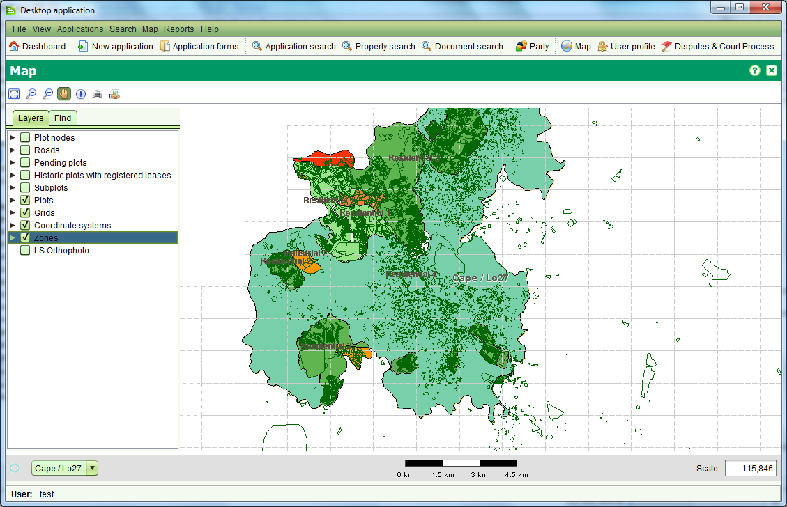
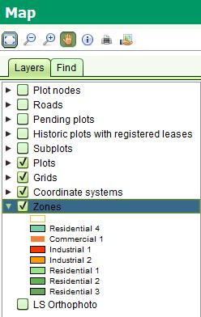
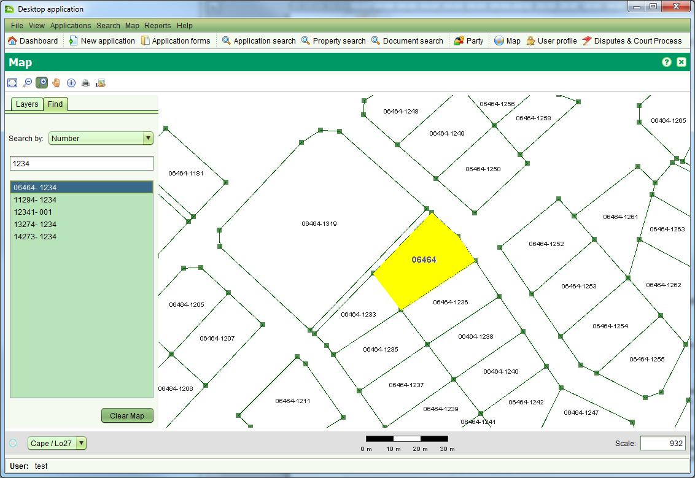

The SOLA Map Viewer allows you to navigate and interact with the
geospatial data managed by SOLA. It can be accessed from the Map >
Ctrl + Open Map menu or selecting 

The SOLA Map Viewer includes a toolbar for navigating and querying the map as well as two tabs; Layers and Find. The Layers tab can be used to control the geospatial data displayed on the map while the Find tab that can be used to quickly locate plots and other geospatial features in the map. The tools provided for the SOLA Map Viewer are:
The SOLA Map Viewer can also support additional map tools for editing and related spatial tasks (e.g. Locate Application). These tools are described in the relevant How To sections
The scale of the map can be controlled using the Zoom in, Zoom out and Zoom to extent tools. The desired scale can also be entered directly into the Scale text box in the bottom right of the map.
A scale bar is displayed to help determine distances on the map. Note that due to variations in screen resolution, the scale bar is indicative only and it should not be used to obtain accurate measurements from the map.
As you pass the mouse over the map you will see map coordinates displayed in the bottom left corner under the Layers and Find tabs. This information can be used to determine coordinate locations on the map.
The Layers tab identifies the layers of geospatial data that can be displayed in the map. You can show or hide these layers by
checking or clearing the checkbox next to the layer name

By clicking the triangle beside each layer name you can also see the
symbology used to illustrate the geospatial data at different map scales.
Using the map scale to control the layer symbology ensures the map
does not become overly crowded with detail which might otherwise
impair navigation or comprehension of the information displayed by the map.
The default layers available for SOLA Lesotho include
You can use the Find tab to perform spatial searches to quickly locate parcels or other geospatial features in the map.
To use the Find, select the type of geospatial feature to search in the Search By drop down and start typing in the field provided.
Once you have entered enough characters (between 1 and 3), the search will begin listing values that match the search criteria.
To view one of the results, double click the result value in the result
list and the map will zoom to the location of the selected feature and highlight it.

The spatial searches available in SOLA Lesotho are:
The Information Tool can be used to query geospatial features such as parcels, survey control, place names, roads, villages, etc. As geospatial features are often in close proximity or overlap, the Information Tool displays details for all features immediately surrounding the selected location. Click the appropriate tab to see details for the various layer features.
The Print Tool can be used to export the current view of the map to a PDF file for printing. Before printing, you should setup the map with the layers you want to include in the print by turning them on or off. Once you have arranged the map with the information you want on the print, click the Print Tool. This will display the Print dialog where you can select the layout (A3, A4, A5) and change the map scale.
Click the Print button to generate a document containing the image of the map. Using the Report Viewer, you can save the print in several formats including PDF, DOCX and HTML or print a hard copy.
The Export to KML Tool can be used to export the currently selected feature of the map into a basic format KML file. That KML file can then be loaded into Google Earth and displayed. Before exporting, you should use the Map Find to locate and select a feature and then click the Export to KML Tool. This will export map data from the selection layer using longitude and latitude coordinates into a file called mapExport.kml in your user_home/sola/ directory. If you have Google Earth installed, double click the file to launch Google Earth and show the feature super-imposed on Google Earth map. Note that you can also use Google Earth to change the styling for the feature.
Two coordinate systems are used in Lesotho, Cape / Lo27 covering the area from
26° E to 28° E and Cape / Lo29 covering the area from 28° E to 30° E. The
SOLA Map can be re-projected using either the Lo27 or Lo29 coordinate system
by selecting the applicable coordinate system in the combo box in the bottom
left of the map.
The Coordinate Systems layer provides a visual reference showing the coordinate
system best suited for the area displayed on the map. Note that SOLA will not
automatically change the display coordinate system of the map. You must
change it manually.
Also see